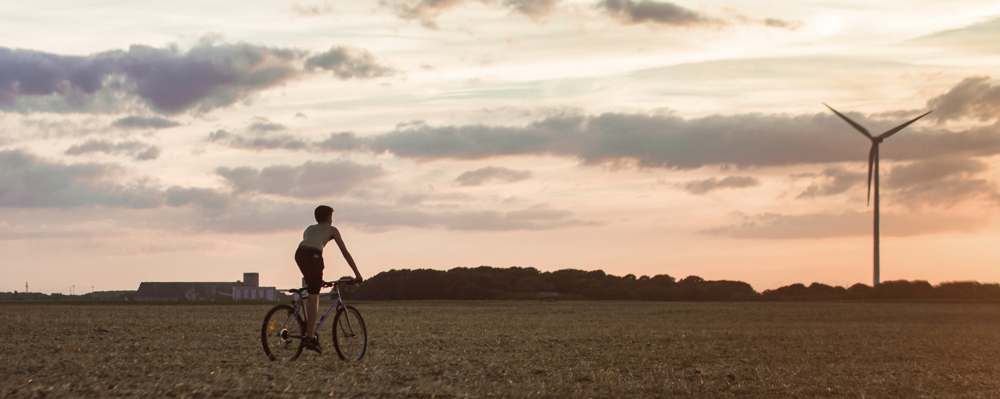
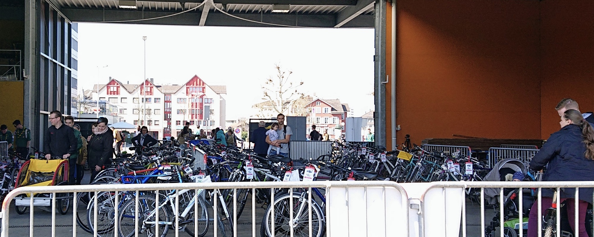

Für den Gossauer Velotag am Samstag, 30. April, kamen insgesamt 235 Velos zusammen. Für 112 verkaufte Velos wurden über 10’000 Franken an die Verkäuferinnen und Verkäufer ausbezahlt. 49 Velos gingen als Spende an die Stiftung Tosam.
Erstmals gab es eine Pump- und Putzstation in Zusammenarbeit mit dem Friedegg-Treff Gossau und einen grossen Parcours auf mehr als 2500 Quadratmetern auf dem Marktplatz, gemeinsam organisiert mit dem VCS. Das Service-Team putzte Velos, pumpte Pneus und reinigte und fettete Ketten. Viele nutzen den autofreien Marktplatz als ideales Gelände für eine Testfahrt, ein Teil davon war mit Material aus der Ludothek Gossau als Geschicklichkeitsparcours für Kinder ab 3 Jahren gestaltet.